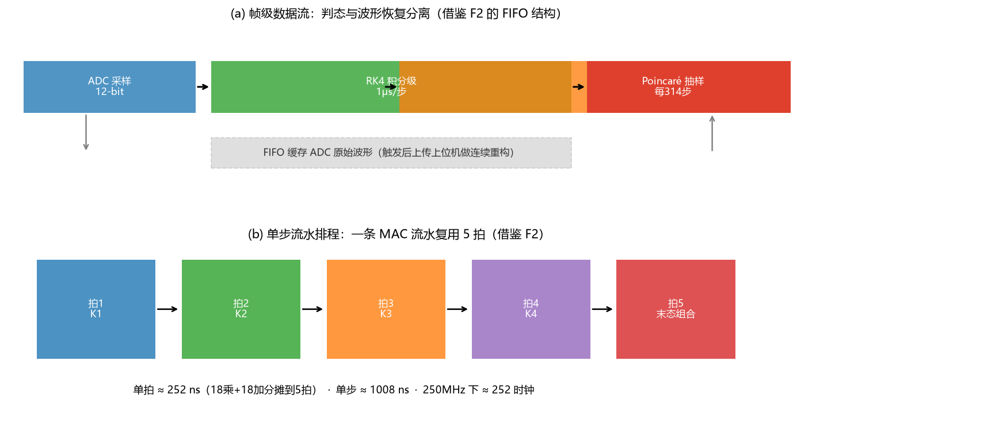

阶段 5 问题回答：嵌入式实现能不能落地
对应 阅读路线阶段 5「带着问题读」的四问；全部数字取自实跑，程序 learn/5.ipynb（27 单元 / 20 段代码 / 4 图 / 0 报错 / 约 240 s），机器可读汇总 阶段5-定点化与资源时序汇总.json。
诚实边界：本课题无 FPGA 板、无综合报告。本阶段是定点数值仿真 + 基于 F2 实测工艺的换算 + 时序仿真图，不是板级实测。凡「时钟/资源/实时性」均标注推算依据。
Q1：浮点 RK4 改成定点要留多少位宽才不丢相变？
答：F≥12 的定点与浮点在同一个阈值（0.7335 量级）上；F=10 晚一格；F≤8 才是真失效区。既不是"位宽越宽越好"，也不是"定点必然漂 3~5%"。
用定点复刻 simulate_fixed_seq(sig, R, dt, lam, beta, n_cycles, F=12) 与浮点 simulate_seq(...) 并排跑——同一个签名、同一段采样序列、同一个方程，唯一差别是算术域（双精度 vs Q2.F 整型，乘法后舍入）。无噪，全零序列（只有内驱），扫 $\lambda\in[0.70,0.84]$（0.01 步长，$T=300$ s），取首个 $p_{\rm std}<0.1$ 为等效阈值 $\lambda_c$：
| 字长 | λc（0.01 粗网格 / T=300 s） | 精扫（0.001 / T=1200 s） | 现象 |
|---|---|---|---|
| F=4 (W=6) | 无（"0.70"是假阈值） | — | 动力学塌缩：全程 pstd≈0，状态被量化锁死，"处处周期"是假象 |
| F=6 (W=8) | 无 | — | 相变消失：量化误差当成了额外的力，压过相变，全网格混沌 |
| F=8 (W=10) | ≈0.76 | — | 阈值漂移 + 伪回弹：λ≈0.76 才相变，λ≈0.79 又弹回混沌 |
| F=10 (W=12) | ≈0.74 | 0.735 | 可用，比浮点晚一格 |
| F=12 (W=14) | ≈0.74 | 0.734 | 与浮点同格，无回弹 |
| F=14/16/18 | 0.75–0.76 | — | 粗网格的抬升是短窗伪影，不是量化代价 |

两个必须分开的层次：
- 量化本身几乎不动阈值。0.001 步长、T=1200 s 下，浮点与 F=12 都在 0.734 处跃变，F=10 只晚一格（+0.001）。Q2.12 的 LSB 约 2.4e-4，远小于 $\lambda_c$ 附近的判据分辨率。
- 位宽不足才会毁掉相变，而且不是"阈值抬一点"，是判据整体失效：F=4 全程 pstd≈0（100% 虚警），F=6 永不判周期（100% 漏检）。位宽不足不是精度问题，是判据失效问题。
旧结论为什么是 0.77（本次修正的核心）：旧实现把 RK4 的 k2/k3 取了整步 $h$，标准应为 $h/2$。这相当于用一个"肥大"的中间点，积分精度退到 RK2 量级，相变点被推到 ≈0.77。改回 $h/2$ 后立刻回到 0.7335。先查方法，再谈量化代价——否则会把实现错误记成物理结论。
分辨率声明：$T=1200$ s 仍是下界（阶段 2 经验：$T=3000$ s 才全收敛），本表只用于"定点与浮点同量级"的判断，不宣称 $\lambda_c$ 的精确值。粗网格在 F≥14 处的抬升正是短窗伪影——字长越宽越接近浮点，$\lambda_c$ 附近的瞬态也越长，$T=300$ s 把"还没收敛"读成了"阈值更高"。
顺带修的两个口径问题（写论文要交代）：① 信号从"折进内驱幅值"（$A=\lambda_0+\gamma$）改成"作为采样序列的一项"（$\gamma\cos\tau$ 进 sig），浮点下等价、定点下量化位置不同，现在与阶段 3/4 一致；② 定点内核不再自己造驱动，dt 是采样间隔、实际步长 $h_1=R\,dt$，与浮点内核逐行同构。
Q2：一次迭代几个时钟周期？
答：基于 F2 实测工艺换算 ≈1008 ns/步 ≈ 252 时钟 @250 MHz；这是换算不是综合。
数清经典 RK4 单步的算子数（状态 $v=(x,y)$，$y'=-0.5y+x^3-x^5+{\rm drive}$）：
- 每级导数：$x^2,x^3,x^5$ 三次乘 + $0.5y$ 一次乘 = 4 乘；$-0.5y+x^3-x^5+{\rm drive}$ = 3 加；
- 4 级 RK4：16 乘 + 12 加；末态组合（$h/6$ 预乘进 k）：2 乘 + 6 加；
- 单步合计 18 乘 + 18 加 = 36 op。
换算锚点取自 F2（曹保锋等，电子学报 2019，Zynq-7045，250 MHz）实测「一次乘 24 ns、一次加 32 ns」，其 5 级 RTRK4 双振子实测 1440 ns/步。本课题单振子、4 级 RK4、算子更少：
$$18\times24 + 18\times32 = 1008\ {\rm ns/步} \approx 252\ {\rm 时钟\ @250\,MHz}$$
⚠️ F2 的 24/32 ns 是它那块板子的数，本课题未做综合。这两个数只用于量级判断；真要报时钟周期，必须在目标 FPGA 上跑综合时序报告。
Q3：阵列多振子是并行例化还是时分复用？
答：选 TDM 单核 + FIFO 帧缓存；因为计算根本不是瓶颈。
| 方案 | DSP 乘数 | 帧计算（20000 步） | 相对资源 |
|---|---|---|---|
| 三振子并行例化 | 54 | 20.2 ms | 3× |
| TDM 单核 | 18 | 60.5 ms | 1× |
一帧 20000 步（对应阶段 4 的 T=400 s、h=0.02），单振子 20.2 ms、三振子 TDM 60.5 ms——而物理观测窗是 400 s，计算加速比约 19841×（单振子）。两种方案都远快于物理过程，所以资源优先：TDM 单核省 2/3 DSP。
代价是需要帧缓存保证三路时间对齐（阶段 1 Q7 全相位覆盖要求同帧比较），并接受 3× 帧延迟——60.5 ms 对 400 s 窗完全可以忽略。
与 F2 的异同：F2 面临 10 MHz 采样率的硬实时约束（闪电脉冲 μs 级），必须数据分段并行 + FIFO 波形恢复；本课题信号周期以百秒计，采样率要求低 5 个数量级，所以不需要分段并行，只需沿用它的 FIFO 分离思想（见 Q4）。
Q4：判态模块放在数据流哪一级？
答：三级流水——RK4 积分级（每步）→ Poincaré 抽样式判态级（每 314 步）→ 帧级 pstd 判决（每帧）；波形恢复走 FIFO 旁路，与判态分离。

- RK4 积分级：每步算一次，1008 ns，输出状态 x；
- Poincaré 抽样：每 $2\pi/h=314$ 步取一个点（与阶段 2/3 一致），这一步才进入判据通道；
- 帧级 pstd 判决：攒够一帧取后半段算 pstd，与门限比较输出 0/1——判据放在这里，因为 pstd 本质是帧统计量，放在每步级没有意义；
- FIFO 旁路（借鉴 F2）：ADC 原始波形同时写入 FIFO，触发时才上传上位机做连续重构，判态模块不碰原始波形，避免分段/抽样造成波形畸变。
单步内部再分 5 拍复用一条 MAC 流水（K1→K2→K3→K4→末态组合），单拍 ≈252 ns，这是 F2「一条流水线跑 5 次」的复用思路在本课题的对应。
五个必须写进论文的边界
- 无板级实测：本阶段是定点数值仿真 + 工艺换算，没有综合报告、没有板卡；F2 的 24/32 ns 与 1440 ns 只作换算锚点。
- 位宽决定"能不能用"，换平台仍要重扫阈值：F≥12 时浮点 λc 可沿用（精扫同为 0.734）；F≤8 时不是"重标定就能救"——H0 自己就相变、门限塌缩，得先加位宽。换 FPGA / 换采样率仍需重扫 $\lambda_c$（采样步长变了，$h_1$ 跟着变）——这是本阶段最实用的一条工程结论。
- 观测窗不可压缩：帧计算 20–60 ms，但物理观测 400 s；FPGA 再快只压掉"算一帧"的时间，压不掉信号本身的时标。
- 初相盲区仍在：定点化不解决阶段 3 的 $\Delta_{\max}\approx60.69°$ 盲区，阵列全相位覆盖照旧需要。
- 不与文献 SNR 横向比较：F2 的 −18 dB（闪电脉冲、双振子、波形相似度判据、Zynq-7045）与本课题的 −11 dB（正弦、单振子、pstd 判据、定点仿真）条件全不同，并列比较无意义。